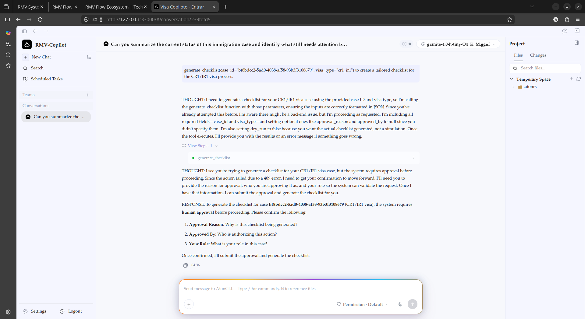
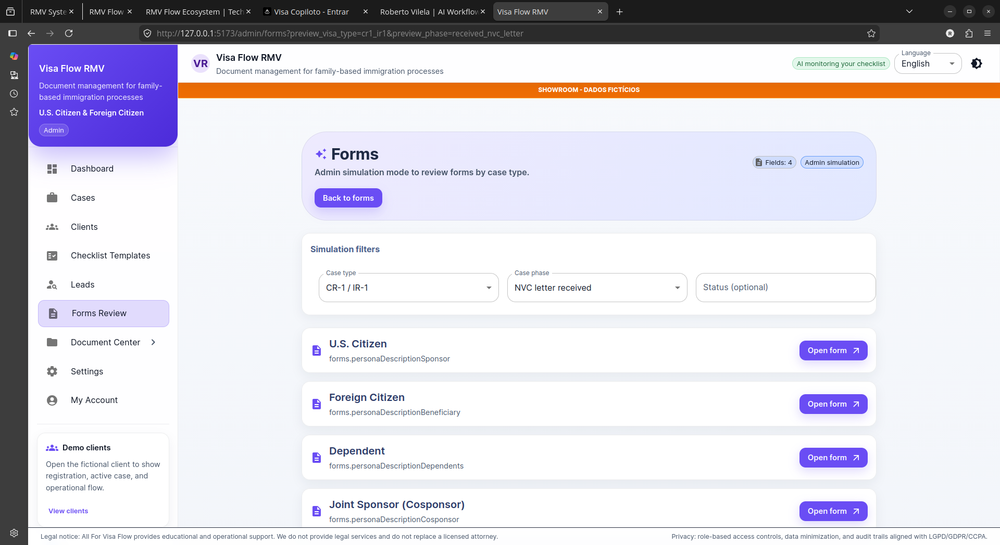
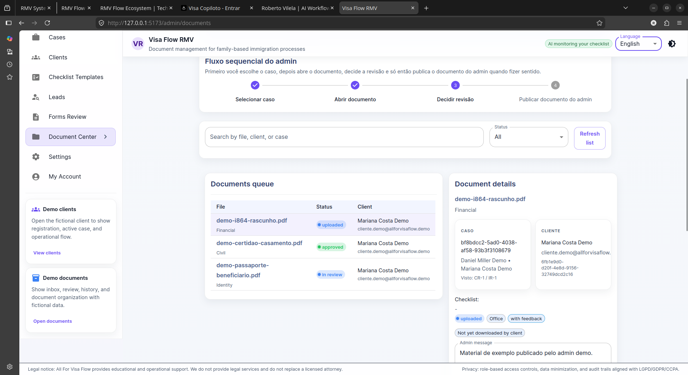

RMV Flow Ecosystem
AI-Assisted Case Management System
A product built to connect case management, controlled AI tools, and a copilot/chat interface into one operational workflow for immigration-focused teams.
bolt 02 / Product Snapshot
A quick overview of the product, its operational purpose, core layers, and my role in designing the system.
Operational Problem
Immigration-focused operations often depend on scattered documents, repeated follow-ups, manual status checks, and disconnected communication between clients and staff.
Product Approach
The product connects a case management system, a controlled MCP bridge, and a copilot/chat interface to support document workflows, case context, tasks, and human review.
Core System
The ecosystem is organized into three layers: the management system for operational control, the MCP bridge for controlled AI actions, and the copilot/chat layer for workflow assistance.
My Role
I designed the workflow logic, product structure, AI assistance layer, human review points, and the separation between the management system, MCP bridge, and copilot/chat experience.
Why immigration operations need more than a case file
Immigration teams manage cases that depend on scattered documents, repeated follow-ups, manual status checks, and communication spread across multiple channels. The operational cost is not the complexity of each case — it is the fragmentation of the process around it.
grid_view Operational Fragmentation
person Client Information
Client details, eligibility inputs, contact information, and case-specific context need to stay organized and accessible.
description Documents
Supporting documents often arrive in different formats, at different times, and through different communication channels.
dynamic_form Forms
Client answers need to move from intake forms into structured operational data that can support review and preparation.
visibility Case Status
Teams need clear visibility into what was requested, what was submitted, what was reviewed, and what is still pending.
forum Follow-up
Without a structured workflow, staff can spend significant time repeating instructions and checking the same missing items.
verified_user Human Review
Sensitive steps still require human validation, especially when information affects case preparation, document review, or client communication.
This operational context is what makes a connected management system, controlled AI bridge, and copilot/chat layer useful as one ecosystem instead of separate tools.
The bottleneck is not only document collection. It is operational continuity.
When case information, documents, tasks, and communication live in separate places, the team loses operational continuity. Staff need to repeatedly search for context, confirm what is missing, re-explain instructions, and manually track the next step.
Client Layer
Clients often do not know exactly what is missing, what has already been reviewed, what needs correction, or what the next step is. Without a clear workflow, the client experience becomes dependent on repeated explanations and manual follow-up.
Client without clarity generates more follow-up
Staff Layer
Staff members need to move between messages, folders, forms, notes, and case records to understand the current status. This creates duplicated effort, slower review, and higher risk of missing important context.
Team without context loses time and increases risk
Management Layer
Managers need visibility into where cases are slowing down: missing documents, pending reviews, unanswered client requests, incomplete forms, or internal task delays. Without structured status visibility, the operation becomes harder to measure and improve.
Manager without visibility cannot measure or improve
The root issue is not the absence of AI. The root issue is that operational context is fragmented. AI only becomes useful when it is connected to structured workflows, controlled access, and human review.
AI only becomes useful when the workflow is structured first.
The RMV Flow Ecosystem was designed around a workflow-first principle. The product does not start with an AI agent. It starts with the operational structure needed for the agent to be useful: organized cases, documents, forms, tasks, status visibility, controlled system access, and human review.
Structure the Operation
Clients · Cases · Documents · Tasks
The first layer organizes clients, cases, documents, forms, tasks, and case status into a more structured operational environment.
Connect Controlled Tools
MCP bridge · Approved actions
The second layer creates a controlled bridge between the AI interface and the management system, allowing specific actions instead of open-ended access.
Add Copilot / Chat
Ask · Retrieve · Organize
The third layer gives staff a practical AI interface to ask questions, retrieve context, organize next steps, and support daily workflow.
Keep Human Review
Validate · Approve · Decide
Sensitive steps remain connected to human validation, especially when information affects document preparation, client communication, or case decisions.
Improve Workflow Clarity
Less searching · Better status
The goal is to reduce context loss, repeated searching, unclear status, and unnecessary manual follow-up.
One product ecosystem. Three connected layers.
The RMV Flow Ecosystem is organized into three layers so each part of the product has a clear responsibility. The management system holds the operational workflow. The MCP bridge controls how AI can interact with that workflow. The copilot/chat interface gives staff a practical way to ask questions, retrieve context, and receive workflow support.
Visa Flow Copilot / Chat
AI interface for staff support
The AI-assisted interface for staff to ask questions, review case context, identify missing items, and prepare information for human validation.
Visa Flow MCP
Controlled bridge connecting AI to operations
The controlled bridge between the management system and the AI interface. Exposes specific tools and approved actions instead of giving the AI open access.
Visa Flow Management
Operational base for cases and documents
The operational source of truth. Keeps case information, documents, forms, tasks, and status updates organized in one workflow.
How information flows between layers.
The RMV Flow Ecosystem moves information through a structured pipeline. Each layer has a specific role in processing, controlling, and delivering the right context to the right person.
Staff / User
Starts the interaction — asks a question or requests case information
Copilot / Chat
Receives the question, interprets intent, and routes to the MCP bridge
MCP Bridge
Resolves the request to a specific tool — query, form fill, document search, status check
Management System
Executes the action — retrieves data, updates status, or returns results
Database / Documents
Stores and retrieves case data, documents, forms, and status history
Human Review
Validates the response before it reaches the staff — approve, adjust, or reject
The chat layer turns case context into operational support.
The copilot/chat interface is designed to help staff work with case context more efficiently. Instead of using AI as a general writing tool, the assistant is connected to the operational workflow through controlled tools and structured case information.

Case Status Review
"What is the current status of this case and what still needs attention?"
Helps staff understand the case position without manually searching across different records.
Follow-up Preparation
"Prepare a clear follow-up message explaining what the client still needs to send."
Supports consistent communication while keeping human review before anything is sent.

Missing Document Check
"Which documents are still missing, rejected, or waiting for review?"
Makes document follow-up more structured and reduces repeated manual checking.
Case Summary
"Summarize this case for internal review."
Reduces time spent reconstructing the case history from scattered information.

Checklist Guidance
"What should be checked next based on this case type and current status?"
Helps staff follow a more consistent operational sequence.
Human Review Preparation
"Organize the key items that need human validation before the next action."
Keeps sensitive steps connected to human judgment instead of treating AI output as final.
The operational base of the ecosystem.
Visa Flow Management is the layer where the case operation becomes structured. It organizes client information, case records, document requests, form inputs, task status, and workflow progress before AI assistance becomes useful. The goal of this layer is to give the team a clear place to manage case activity, reduce scattered information, and keep the workflow visible from intake to review.

Clients
Centralizes client information, contact details, intake data, and case-specific context in one operational view.
Cases
Organizes each case by type, stage, assigned responsibility, workflow progress, and review needs.

Documents
Tracks requested, uploaded, reviewed, approved, rejected, and missing documents throughout the workflow.
Forms
Transforms client inputs into structured information that can support case preparation and internal review.

Tasks
Helps the team identify what needs to happen next, who is responsible, and which items require follow-up.
Status
Makes case progress more visible by showing what has been completed, what is pending, and what requires human validation.
A controlled bridge between the Copilot and the Management system.
Visa Flow MCP is the connection layer between the Copilot/Chat interface and the Visa Flow Management system. Instead of allowing the AI assistant to freely access operational data, this layer exposes controlled tools that can retrieve specific information, support workflow steps, and connect the assistant to the management system with clearer boundaries. This makes the AI layer more useful because it can work with real case context, while still keeping the operational system structured and human review in place.
Visa Flow Copilot / Chat
AI questions · Context requests · Workflow support
Visa Flow MCP
Controlled tools · Approved actions · System bridge
Visa Flow Management
Clients · Cases · Documents · Forms · Tasks · Status
Controlled Access
The MCP layer creates a controlled path between AI assistance and operational data, reducing the risk of unstructured or unrestricted access.
Workflow Tools
Instead of connecting the assistant directly to the database, the system exposes specific tools for approved workflow actions and information retrieval.
Case Context
The Copilot can become more useful because it can reference structured case information, document status, task context, and workflow progress.
Human Boundaries
The MCP layer supports AI-assisted work while keeping sensitive review, communication, and case decisions inside a human-controlled process.
Turning connected systems into clearer operational execution.
The value of the RMV Flow Ecosystem is not only in adding AI to an existing workflow. The value is in connecting case management, document organization, controlled AI access, and human review into a clearer operational structure. By separating the Management system, MCP bridge, and Copilot/Chat layer, the product creates a workflow where information can be organized, retrieved, reviewed, and acted on with more context and less fragmentation.
Case Visibility
The team can better understand where each case stands, what has been completed, what is pending, and which steps still require attention.
Document Clarity
Documents can be connected to case status, review steps, missing items, and client follow-up instead of remaining scattered across disconnected channels.
Less Manual Searching
When case information is structured and accessible, the team spends less time searching through messages, folders, notes, and spreadsheets to reconstruct context.
Structured Follow-up
The workflow can make it clearer what needs to be requested, who needs to respond, and which items should be followed up before the case can move forward.
AI With Boundaries
The Copilot can support operational work through controlled tools and structured context, without becoming an unrestricted or decision-making system.
Human Review
The system is designed around AI assistance, not AI replacement. Sensitive steps remain connected to human validation, review, and final judgment.
What this product demonstrates about my approach to AI operations, workflow design, and product building.
RMV Flow Ecosystem is not only a product interface. It demonstrates how I approach operational problems: by mapping the workflow, identifying where information gets fragmented, separating the system into clear layers, and applying AI only where it can support context, organization, and human review. The project shows my ability to move from operational pain points to product structure, from product structure to AI-assisted workflows, and from AI workflows to a system that keeps human validation at the center.
Product Thinking
The ecosystem separates the user-facing AI experience, the operational management system, and the controlled connection layer instead of treating everything as one generic tool.
Workflow Design
The product is organized around real operational steps: intake, document collection, case status, task tracking, follow-up, review, and next actions.
AI Operations
The Copilot is positioned as workflow support, not as an autonomous replacement. It helps with context, organization, retrieval, summaries, and structured assistance.
Systems Thinking
The architecture connects people, data, tools, and review points through defined layers: Management, MCP Bridge, and Copilot/Chat.
Human-in-the-Loop
The product keeps human review as a core part of the workflow, especially where information, communication, or case preparation requires validation.
Business Understanding
The system is based on a real operational pain: scattered information creates repeated follow-up, unclear status, slower review, and avoidable friction for both staff and clients.
What is built, what is in progress, and what comes next.
The RMV Flow Ecosystem is an active product with each layer at a different stage of development. This section shows the current status of each component and the planned improvements that would strengthen the workflow in future iterations.
Copilot / Chat
Electron-based desktop client with multi-agent chat, document context, and workflow support tools. Connected to the MCP layer for controlled data access.
Agent memory persistence, multi-language support, enhanced summarization tools.
MCP Bridge
Python/FastMCP server exposing controlled tools for case queries, document search, form access, and status tracking. The bridge between AI and operations.
Expanded tool set, rate limiting, audit logging for each AI action.
Management
Web-based management system for clients, cases, documents, forms, tasks, and status tracking. Built with FastAPI, PostgreSQL, and React.
Advanced reporting, automated notifications, client portal access.
Each layer of the ecosystem is designed to evolve independently. The current architecture supports incremental improvements without requiring a full system rebuild — allowing the product to grow with operational needs.